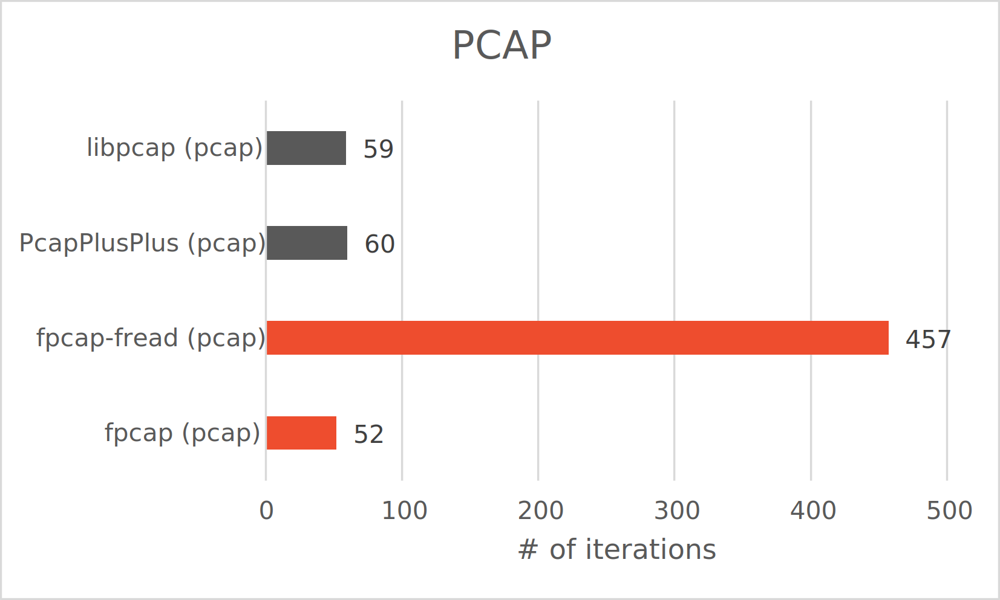
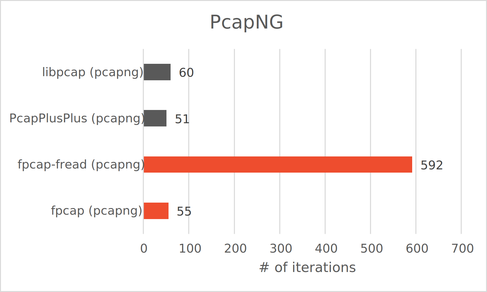
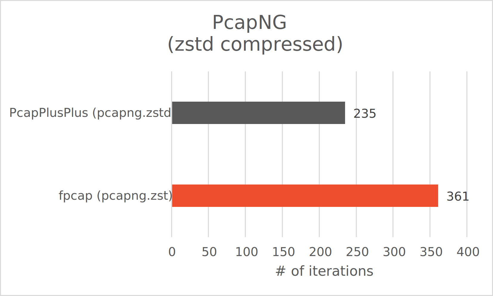

bolt
Fast packet reading
Focussed on providing the fastest possible network packet reading solution out there, FPCAP outperforms alternatives, including libpcap and PcapPlusPlus. Written entirely in modern C++, FPCAP puts the performance where it matters - in the hands of the users and their big data use-cases.
memory
Memory efficient
With great bandwidth comes great memory consumption, but not so for FPCAP. By leveraging built-in OS features like memory-mapped reading, FPCAP reads even the biggest capture files without a hustle. From Raspberry Pis to cloud computing clusters - the sky is the limit.
engineering
Easy to integrate
Tired of ever-growing heaps of incompatible software dependencies? FPCAPs zero dependency architecture and modern CMake build environment require only the standard library to build. Optional dependencies, such as compression are bundled and all interfaces follow modern C++ guidelines.
diversity_3
Open source
At FPCAP we strongly believe in sharing knowledge, including free and open software. Therefore, FPCAP is distributed as an open source software library, without any hidden fees or agenda. Free to use by anyone for any purpose.
Features
- Fast and memory-efficient capture file reading via fread and memory-mapping.
- Reading of PCAP and PcapNG capture file formats (.pcap / .pcapng / .cap) and their block types (including options).
- Support for zstd compressed capture files (.pcap.zst / .pcapng.zst).
- Cross-plattform support, from Linux, Windows and Apple to x86, ARM and RISC-V, both 32 and 64-bit.
- Modern CMake build-system support with no mandatory dependencies, only the standard C++ library.
Benchmarks
Benchmarks on a Windows 10 (64-bit) x86 desktop computer with 12th Gen Intel(R) Core(TM) i9-12900KS 3.40 - 5.50 GHz and 64 GB of RAM via a NVMe PCI 4.0 SSD on the 29th of May 2022. Benchmarked using google benchmark and the fpcap-benchmark project. Comparison of the number of iterations reading the same capture file over and over using different techniques and libraries.
  Roadmap
- Extended benchmark
- Full support for all block types and options
- Header-only version
- Python adaptation
- Extended CI/CD pipeline
- Big Endian compatibility